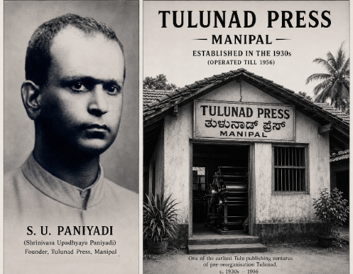
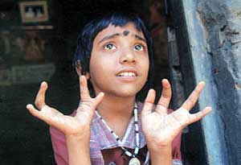
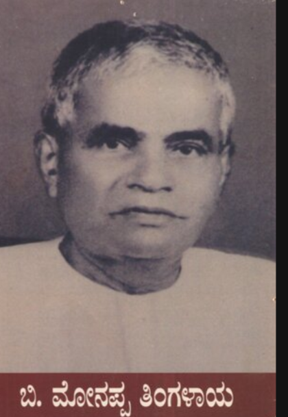

Tuluva Guardian
DIGITAL ARCHIVE OF THE RESISTANCE
Investigation Dossier 01: The Century of Attrition (1926–2026)
The denial of official status for the Tulu language is not a mere bureaucratic oversight; it is a structural weapon of exclusion that has historically acted as a death sentence for the Tuluva nation. For over a century, the administrative machinery has functioned in tongues foreign to our soil, creating a lethal disconnect between the state and the people it claims to serve. In the rural heartlands of the cashew belt, where Tulu is the only bridge to reality, thousands were left defenseless against a healthcare system that refused to speak their language. When the "Yellow Rain" began to fall, our people sought help in the only words they knew, only to be met with the cold, uncomprehending silence of a monolingual bureaucracy. This linguistic apartheid ensured that critical warnings were never understood, medical histories were never recorded, and the suffering of the masses was conveniently ignored because it was expressed in a tongue that held no official currency. The 30,000 souls lost to this attrition are the silent witnesses to a system that chose linguistic hegemony over human survival, and their memory demands the immediate restoration of our linguistic rights to prevent another century of medical abandonment.

The investigation now formally documents a staggering toll: an estimated 30,000 Tuluvas sacrificed on the altar of state expansionism and corporate greed, a body count that transforms our struggle into a primary humanitarian crisis. This figure represents the cumulative total of a century of systematic destruction, peaking with the "Biological Genocide" of the Endosulfan era between 1980 and 2001. For twenty years, state-owned corporations launched aerial sorties over the lush plantations of Belthangady, Sullia, and Puttur, raining down poison with total disregard for the biological integrity of the Tuluva nation. This was not a failure of agricultural policy; it was a calculated policy of attrition designed to break the rural spirit and poison the very DNA of our future generations. We saw our children born with twisted limbs and broken minds, victims of a state that valued profits more than the lives of the Tulu-speaking peasantry. The 30,000 souls are the martyrs of a hidden massacre that the 60-year institutional blackout tried to erase from history, treating Tuluva lives as mere disposable assets in a grander design of regional domination.

The massacre was perfected through the systematic denial of medical sovereignty in the Tulu-speaking borderlands of Kasaragod. By intentionally hollowing out the local healthcare infrastructure, the administrative machinery ensured that the victims of the chemical war had no choice but to enter a state of "Medical Exile." This forced migration turned our once-proud farmers into refugees, crossing borders that were often closed to them in their moments of greatest agony. Many were turned away from facilities simply because they spoke only Tulu, left to die in the hallways of institutions that refused to recognize their existence or their language. This was a masterstroke of demographic dilution; by making the heartlands unlivable and the hospitals unreachable, the state cleared the soil of its traditional Tuluva guardians while our people suffered in silence. The 2020 border blockades were merely the modern, visible manifestation of a siege that has been operational for over four decades, proving that to the state, a Tuluva life is only as valuable as the land it can be extracted from.
Today, the Tuluva Guardian declares that the era of passive suffering and the "60-Year Blackout" has officially ended; we are moving from the hospital wards and the cashew groves to the high courts of law. Every hidden file and every suppressed medical report that sought to erase the truth of the 30,000 souls is now being resurrected as primary evidence for a legal counter-offensive. We are building a dossier of defiance that links the linguistic erasure of S.U. Paniyadi’s era directly to the biological genocide of the present day, proving that the massacre is a continuous, singular event. Our demand for a Writ of Mandamus is not just a legal request; it is a battle cry for the restoration of a nation that has been systematically bled dry. We will no longer be the silent victims of the "Yellow Rain"; we are the prosecutors of a century-long crime. The blackout is shattered, the evidence is live, and the nation is rising from the poisoned earth to reclaim its absolute, unalienable right to exist.
